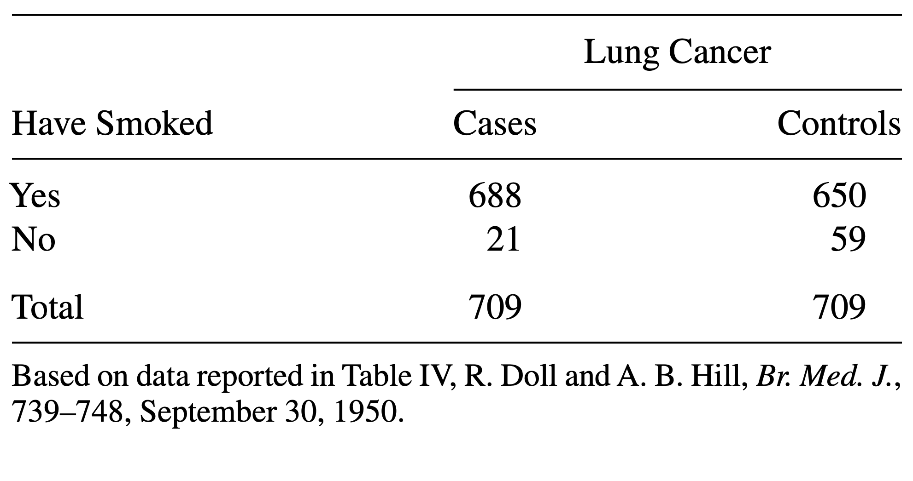

Quantifying association
Last updated on 2023-11-21 | Edit this page
Estimated time: 20 minutes
Overview
Questions
Objectives
Here’s the table again:
| diseased | healthy | |
|---|---|---|
| not exposed | 4 | 96 |
| exposed | 10 | 90 |
What we probably want to find out in a study as described in the previous episode, is whether the
chemical has an effect on the risk for getting the disease. We could
also say, that we’d like to know whether the variables
outcome and exposure are associated.
Yet another way to express this question in quantitative terms is asking
whether the proportions of diseased mice are the same for exposed and
non-exposed mice.
So, it’s rather obvious that the proportions differ between the two test groups in this specific sample:
- \(4/100 = 4\%\) in the non-exposed group
- \(10/100 = 10\%\) in the exposed group.
But since sampling includes randomness, it could be that the difference is just by chance. Later in this lesson we’ll learn how to test whether the difference in proportions is significance, by asking how likely it is to see this difference just by chance, given the number of test mice at hand.
For now, we’ll start by quantifying the effect that we observe in this sample. There are different options to express the effect of the exposure from this sample. After all we’re summarizing 4 counts into one value, and there are more than one way of doing so.
Measures for association
Difference in proportions: The difference in proportions is the most intuitive way of summarizing the contingency table. We subtract the proportion of diseased mice in one group from the proportion in the other. In our example
\[ D = \hat{P}(\text{disease}|E) - \hat{P}(\text{disease} | N) = 0.06\] In the formula above, we subtract two conditional probabilities from each other. The notation \(P(\text{event} | \text{condition})\) describes the probability of an event, given a condition. I use \(N\) and \(E\) for describing the non-exposed and exposed group, respectively. So \(P(\text{disease}|N)\) is the probability of getting the disease, given that a mouse belongs to the non-exposed group.
Callout
Why the hat? Well, we’d sure like to learn something about the true probabilities of getting the disease under some condition, but in fact we only have a sample of 200 mice, which means the proportions don’t correspond to the true probabilities, generalized over all mice in the world. The notation \(\hat{P}\) acknowledges the fact that the sample proportions are our current best estimate for the true probabilities.
Relative risk: You may have noticed a problem about the difference in proportion: It depends on how high the prevalence of the disease is in the first place. For a disease with a very low prevalence, we might see a difference between 8/1000 and 4/1000 test subjects of the exposed and non-exposed group, which is only \(0.4\%\). But in relative terms, the prevalence is twice as high in the exposed group compared to the non-exposed group.
We can account for that by reporting the ratio between the proportions in both groups:
\[RR = \frac{\hat{P}(\text{disease} | E)}{\hat{P}(\text{disease} | N)} = 2.5 \]
The result \(RR=2.5\) tells you that the proportion of mice who developed the disease was \(2.5\) times higher in the exposed group than in the non-exposed group.
Callout
The relative risk has its origin in epidemiology, which means that the name is meaningful in many clinical settings, but not necessarily in with regard to every wet lab experiment. The important part here is to first phrase the research question carefully, and then think about which measure can be helpful in answering it. If the \(RR\) is useful in your case, but the name doesn’t make sense regarding your data, you can still use the measure and think about a more useful terminology.
Odds ratio: Often, the association between two variables (in this case: disease and exposure) is also expressed in terms of odds ratios. If a disease has the probability of \(p=0.1\) of occurring in a mouse within a given time, then the odds of getting the disease is \(\frac{p}{1-p}=\frac{0.1}{0.9}=0.11\). The odds ratio compares the odds of getting the disease between two conditions. In our example the odds ratio is
\[OR = \frac{\hat{P}(\text{disease}|E) / (1 - \hat{P}(\text{disease}|E)) }{\hat{P}(\text{disease}|N) / (1 - \hat{P}(\text{disease}|N))} \approx 2.7\]
We say that the odds for getting the disease is 2.7 higher in the exposed group compare to the non-exposed group. For calculating the sample odds ratio, you can use the following simple formula:
\[ OR = \frac{n_{1,1} / n_{1,2}}{n_{2,1} / n_{2,2}}\]
Admittedly, the odds ratio is not a very intuitive measure for association, but it has some useful mathematical properties (which won’t concern us in this lesson). The odds ratio is
\[OR = \begin{cases} >1 & \quad \text{if there is a positive association}\\ \,1 & \quad \text{if there is no assocation}\\ <1 & \quad \text{if there is a negative association} \end{cases}\]
Note that the \(OR\) depends on how you order your table.
Log odds ratio: The log odds ratio is simply the logarithm of the odds ratio, \(\log(OR)\). One nice thing about this value is that it’s zero when there’s no association between the two variables.
\[\log OR = \begin{cases} >0 & \quad \text{if there is a positive association}\\ \,0 & \quad \text{there is no association}\\ <0 & \quad \text{there is a negative association} \end{cases}\]
This scale is useful for plotting data, because it’s good at resolving strong negative associations (for example, if a treatment decreases the risk for disease), which would be very small numbers when expressed as relative risk, or odds ratios.
Knowing about log odds and log odds ratios is also useful for interpreting some statistical models (for example Poisson GLM, or logistic models) where the model parameters are expressed in terms of log odds.
Challenge
Consider the following data: 
The above table comes from one of the first studies of the link between lung cancer and smoking, by Richard Doll and A. Bradford Hill. In 20 hospitals in London, UK, patients admitted with lung cancer in the previous year were queried about their smoking behavior. For each patient admitted, researchers studied the smoking behavior of a non-cancer control patient at the same hospital of the same sex and within the same 5-year grouping on age. A smoker was defined as a person who had smoked at least one cigarette a day for at least a year.
- Construct a table that represents this study in R.
- Calculate a measure for association that you find useful in this scenario.
- Construct a contingency table:
R
mytable <- rbind(
c(688, 650),
c(21, 59)
)
rownames(mytable) <- c("yes", "no")
colnames(mytable) <- c("cases", "controls")
- Since this is a case control study, comparing the proportions of cancer patients between smokers and non-smokers makes no sense. They don’t reflect the true probabilities of getting cancer, because by design the same number of cancer and no cancer subjects were included in the study. Instead, you can compare the proportions of smokers between the groups:
R
# 1. difference in proportions of smokers between cases and controls
688/(21+688) - 650/(59+650)
OUTPUT
[1] 0.05359661R
# ratio in proportions of smokers between cases and controls
(688 / (21+688)) / (650 / (59+650))
OUTPUT
[1] 1.058462R
# --> The proportion of smokers was 1.05 times higher for the cases
# odds ratio
(688 / 21) / (650/59)
OUTPUT
[1] 2.973773R
# --> The odds for having smoked was 3 times higher in the cases group
# log odds ratio
log((688 / 21) / (650/59))
OUTPUT
[1] 1.089831